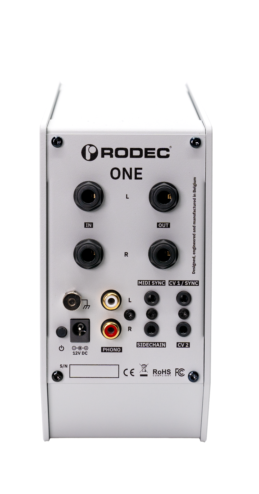

Backpanel Connections
Back Panel Connections
Audio I/O
- Stereo Input – Balanced 6.3 mm TRS connectors
- Stereo Output – Balanced 6.3 mm TRS connectors
- Unbalanced Inputs – RCA connectors with grounding post (for use with the M-101 Phono Preamp)
Control & Sync
- Sidechain Input – 3.5 mm stereo
- CV Inputs – CV1 (mono) and CV2 (mono)
- CV1 also doubles as analog sync for compatible modules
- MIDI Sync – Dedicated 3.5 mm connector for future module synchronization
Power
- DC Input – Center positive, 12 V / 1 A
- Power Switch – On/off toggle
Power Supply
The Rodec ONE distributes clean and stable power to all installed modules. It has been engineered to handle high-current modules without noise or instability, making it suitable for both studio and stage use.